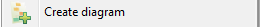
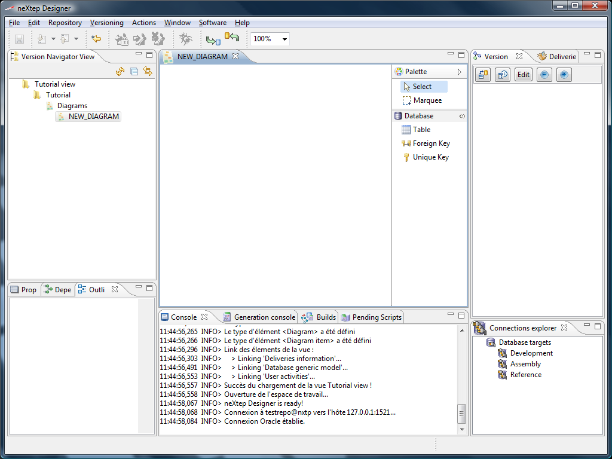
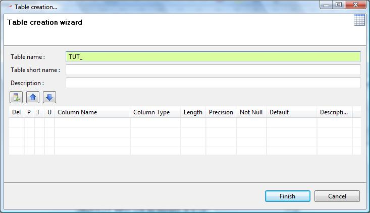
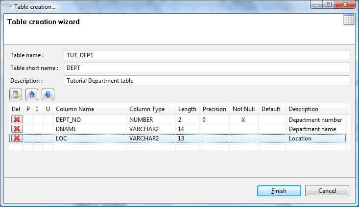
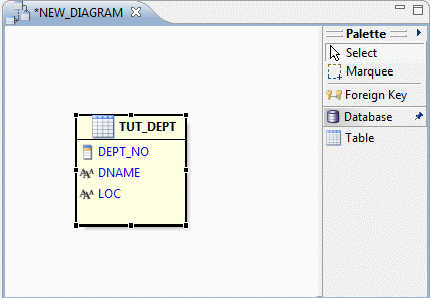
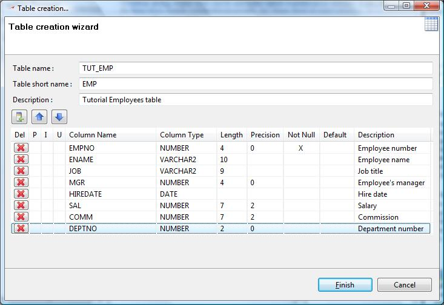
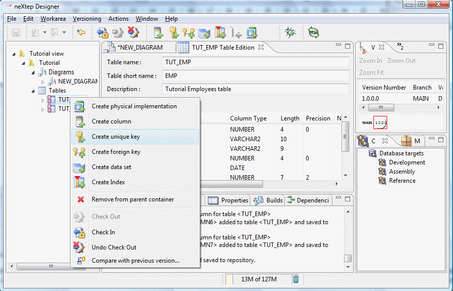
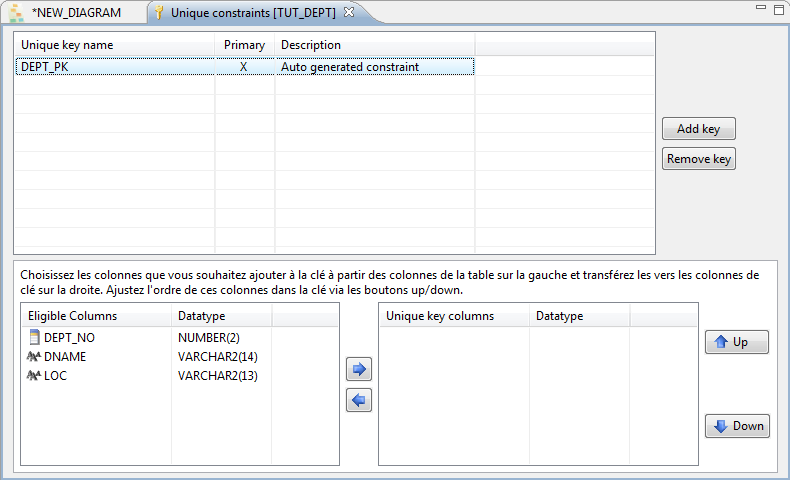
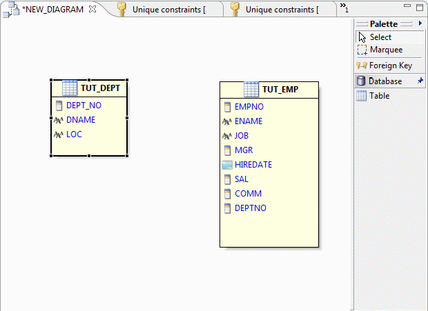
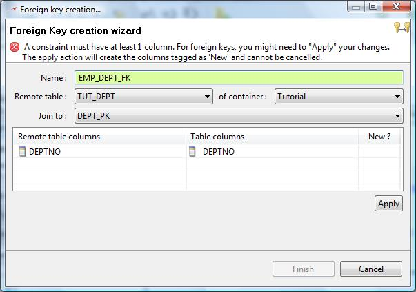

Now that we have our tutorial container in our tutorial view, we are ready to create a new model. Even though there are several ways to create a model, we will show you the one we prefer while working on a business project.
The preferred approach consists in first designing our model, and then fine tuning our model by editing the designed element. So far, designer only has physical diagramming capabilities.
So right click on your new container and select Create diagram from the popup menu.

An empty diagram called NEW_DIAGRAM will be created and opened in the editor's area.

Expand the Palette (if needed) in the diagram editor, and select the Table tool to create a new table. Then click in the blank space of the diagram at the position where you want to create your new table, you will see the following popup :

As you can see, the name is pre-filled with “TUT_”. This is because we have defined the short name of our container to “TUT”. Therefore every table will be prefixed by this short name automatically. We will create the classic Oracle DEPT / EMP tables to work with familiar simple examples (at least for Oracle users). Fill-in the fields for the DEPT table definition. Columns can be added by clicking the icon at the upper left of the columns table control, fields can be edited by simply clicking on them.

Click Finish. The diagram will now contain a table and will look like the following :

We will now create our 2nd table with the other option we have for table creation: via the view navigator. Right click on the Tutorial container in the view navigator and click on :
The
same Table creation dialog
will come up to edit your new table definition. Fill the EMP table
definition as below to create the new table and click Finish.

As you can see, the table definition dialog is pretty simple. No tabs with constrains, indexes, physical implementation or anything else than table and column information. Much attention in neXtep Designer has been paid to provide clean and simple editors. Any database element will generally have its own simple editor, allowing you to “extend” a definition by adding other sub-elements.
We will now add the primary keys to those 2 tables. For doing this, we right-click on our TUT_DEPT table in the view navigator and select Create unique key :

A new editor will be opened in the central area with the unique key definitions. Since this is a first unique key creation, neXtep Designer will initialize a primary key for you and will automatically name it from your table short name with the “_PK” suffix.

Now select the DEPT_NO column in the eligible columns table and click the central down arrow to add this column to the primary key columns.
Your primary key is set up! Now do the same for TUT_EMP table by creating a unique key and adding the emp_no column to its definition.
Now go back to your initial diagram. We only have the TUT_DEPT table in it. To add TUT_EMP table to this diagram simply drag the TUT_EMP table from the view navigator to the position in the diagram where you want to locate this table.

Now we will create a foreign key graphically from the diagram. So we select the Foreign Key tool from the palette, we click on the TUT_EMP table from the diagram area (which is the table on which we add the foreign key), and then we click on the TUT_DEPT table which is the remote table. The Foreign Key creation wizard dialog will come up.

The dialog is initialized with the data you provided: remote table is TUT_DEPT and the default is to join it to the primary key you created before (DEPT_PK). You are able to change these data by selecting different values from the combo boxes. But this is OK for us. Below the combos you will find the foreign key columns table allowing you to map the foreign columns of the DEPT_PK primary key to columns in the TUT_EMP table. Designer look for a “DEPTNO” column in the table TUT_EMP since the column of the remote constraint is named DEPTNO.